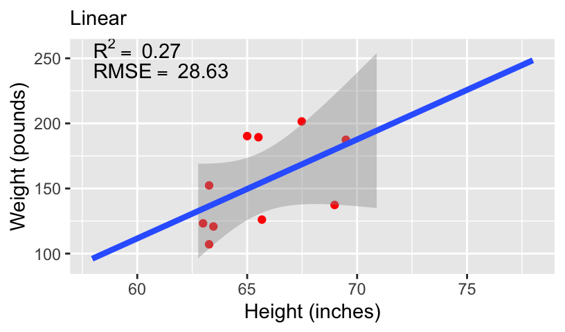
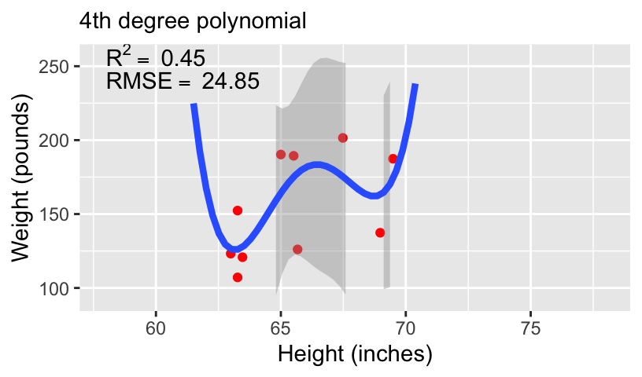
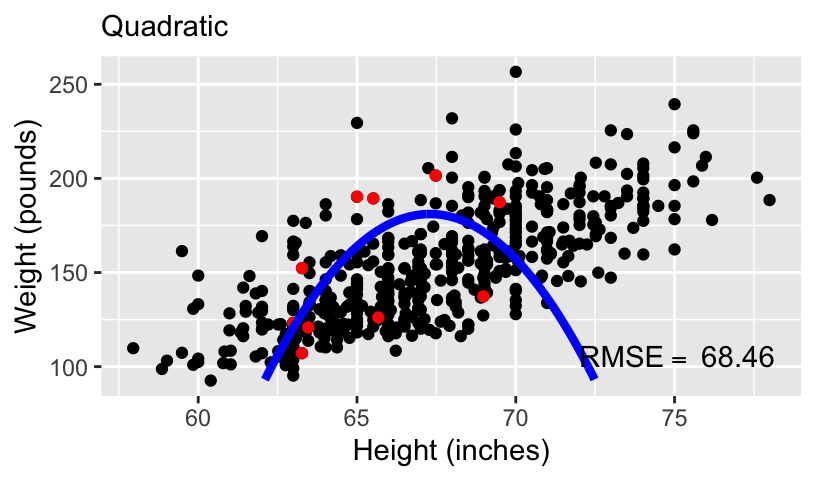

Model Comparison
Jan 30, 2025
Review of last lecture
On Tuesday, we learned about various ways to check MCMC convergence and model fit.
Traceplots, effective sample size (\(n_{eff}\)), MC standard error, \(\hat{R}\), sampling issues
Posterior predictive checks
Model checks using
shinystan
Today, we will learn about model comparisons.
Model comparison
In statistical modeling, a more complex model almost always results in a better fit to the data.
- A more complex model means one with more parameters.
If one has 10 observations, one can have a model with 10 parameters that can perfectly predict every single data point (by just having a parameter to predict each data point).
There are two problems with overly complex models.
They become increasingly hard to interpret (think a straight line versus a polynomial).
They are more at risk of overfitting, such that it does not work for future observations.
Model fit: an example data set
Let’s explore the idea of model fit using an example dataset from the
openintropackage calledbdims.This dataset contains body girth measurements and skeletal diameter measurements.
Today we will explore the association between height and weight.
Model fit: an example data set

Models of increasing complexity
When using height to predict weight, we can models of increasing complexity using higher order polynomials.
Let’s fit the following models to the subset of 10 data points:
\[\begin{aligned} \mathbb{E}[weight_i] &= \beta_0 + \beta_1 height_i\\ \mathbb{E}[weight_i] &= \beta_0 + \beta_1 height_i + \beta_2 height_i^2\\ \mathbb{E}[weight_i] &= \beta_0 + \beta_1 height_i + \beta_2 height_i^2 + \beta_3 height_i^3\\ \mathbb{E}[weight_i] &= \beta_0 + \beta_1 height_i + \beta_2 height_i^2 + \beta_3 height_i^3 + \beta_4 height_i^4 \end{aligned}\]
- We can compare these models using standard measures of goodness-of-fit, including \(R^2\) and root mean squared error (RMSE).
Overfitting and underfitting




Overfitting and underfitting




Overfitting and underfitting
With more complex models, out-of-sample prediction becomes worse.
This is because when you use a complex model in a data set, it tailors the coefficients to any sampling errors and noise in the data such that it will not generalize to new observations.
Therefore, our goal in model comparison is to choose a model with the following two properties:
It is complex enough to capture the essence of the data generation process (and thus avoid underfitting),
It avoids overfitting to make the model usefull for predicting new observations.
Finding an optimal model
Trade-off between overfitting and underfitting (in machine learning this is commonly called bias-variance trade-off).
A simple model tends to produce biased predictions because it does not capture the essence of the data generating process.
A model that is overly complex is unbiased but results in a lot of uncertainty in the prediction.
Polynomials are merely one example of comparing simple to complex models. You can think about:
Models with and without interactions,
Models with a few predictors versus hundreds of predictors,
Regression analyses versus hierarchical models, etc.
Model Comparison
When comparing models, we prefer models that are closer to the true data-generating process.
We need some ways to quantify the degree of closeness to the true model. Note that in this context models refer to the distributional family as well as the parameter values.
For example, the model \(Y_i \sim N(5,2)\) is a different model than \(Y_i \sim N(3,2)\), which is a different model than \(Y_i \sim Gamma(2,2)\).
- The first two have the same family but different parameter values (different means, same SD), whereas the last two have different distributional families (Normal vs. Gamma).
One way to quantify the degree of closeness to the true model is using Kullback-Leibler (KL) divergence.
Kullback-Leibler divergence
- For two models, \(M_0\) and \(M_1\), the KL divergence is given by,
\[\begin{aligned} D_{KL}\left(M_0 | M_1\right) &= \int_{-\infty}^{\infty} f_{M_0}(\mathbf{Y}) \log\frac{f_{M_0}(\mathbf{Y})}{f_{M_1}(\mathbf{Y})} d\mathbf{Y}\\ &\hspace{-1.5in}= \int_{-\infty}^{\infty} f_{M_0}(\mathbf{Y}) \log f_{M_0}(\mathbf{Y})d\mathbf{Y} - \int_{-\infty}^{\infty} f_{M_0}(\mathbf{Y}) \log f_{M_1}(\mathbf{Y})d\mathbf{Y} \end{aligned}\]
- Note that \(D_{KL}\) is not considered a distance, because it is not strictly symmetric, \(D_{KL}\left(M_0 | M_1\right) \neq D_{KL}\left(M_1 | M_0\right)\).
Kullback-Leibler divergence
As an example, assume that the data are generated by a true model \(M_0\), and we have two candidate models \(M_1\) and \(M_2\), where
\(M_0: Y_i \sim N(3,2)\)
\(M_1: Y_i \sim N(3.5, 2.5)\)
\(M_2: Y_i \sim Cauchy(3,2)\)

- \(D_{KL}(M_0 |M_1) = 0.063\), \(D_{KL}(M_0 | M_1) = 0.259\), so \(M_1\) is a better model than \(M_2\).
Comparing models using KL
Note that in the expression of \(D_{KL}\), when talking about the same target model, the first term is always the same and describes the true model, \(M_0\).
Therefore, it is sufficient to compare models on the second term,
\[\int_{-\infty}^{\infty} f_{M_0}(\mathbf{Y}) \log f_{M_1}(\mathbf{Y})d\mathbf{Y},\] which can also be written as, \(\mathbb{E}_{M_0}\left[\log f_{M_1}(\mathbf{Y})\right].\)This term is the expected log predictive density (elpd).
A larger elpd is preferred. Why?
Comparing models using KL
In the real world, we do not know \(M_0\).
If we knew, then we would just need to choose \(M_0\) as our model and there will be no problem about model comparisons.
Even if we knew the true model, we would still need to estimate the parameter values.
Thus, we cannot compute elpd, since the expectation is over \(f_{M_0}(\mathbf{Y})\).
We need to estimate elpd!
Comparing models using KL
elpd is an expectation, so we can think about estimating it using Monte Carlo sampling, \[\frac{1}{S}\sum_{s = 1}^S\log f_{M_1}\left(\mathbf{Y}^{(s)}\right)\rightarrow \mathbb{E}_{M_0}\left[\log f_{M_1}(\mathbf{Y})\right], \quad \mathbf{Y}^{(s)} \sim f_{M_0}(\mathbf{Y}).\]
- We need to find a way to approximate, \(f_{M_0}\left(\mathbf{Y}^{(s)}\right)\).
A naive way to approximate \(f(\mathbf{Y}^{(s)})\) is to assume that the distribution of the observed data is the true model.
This is equivalent to assuming that \(\mathbf{Y}^{(s)} \sim \{\mathbf{Y}_1,\ldots,\mathbf{Y}_n\}\).
This leads to an overly optimistic estimate and favors complex models.
Comparing models using KL
A better way to estimate elpd is to collect data on a new independent sample that is believed to share the same data generating process as the current sample, and estimate elpd on the new sample.
This is called out-of-sample validation.
The problem, of course, is we usually do not have the resources to collect a new sample.
Therefore, statisticians have worked hard to find ways to estimate elpd from the current sample, and there are two broad approaches, information criteria and cross-validation.
Overview of comparison methods
Information criteria: AIC, DIC, and WAIC, which estimate the elpd in the current sample, minus a correction factor.
Cross validation: A method that splits the current sample into \(K\) parts, estimates the parameters in \(K − 1\) parts, and estimates the elpd in the remaining 1 part.
- A special case is when \(K = n\) so that each time one uses \(n-1\) data points to estimate the model parameters, and estimates the elpd for the observation that was left out. This is called leave-one-out cross-validation (LOO-CV).
Information criteria
Several information criteria have been proposed that do not require fitting the model several times, including AIC, DIC, and WAIC.
We will introduce the information criteria, assuming a likelihood \(f(\mathbf{Y} | \boldsymbol{\theta})\) for observed data \(\mathbf{Y} = (Y_1,\ldots,Y_n)\) with population parameter \(\boldsymbol{\theta}\).
Information criteria are often presented as deviance, defined as, \(D(\mathbf{Y}|\boldsymbol{\theta}) = −2 \log f(\mathbf{Y}|\boldsymbol{\theta})\).
Ideally, models will have small deviance.
However, if a model is too complex it will have small deviance but be unstable (overfitting).
Akaike information criteria (AIC)
Akaike information criteria (AIC) estimates the elpd as,
\[\widehat{\text{elpd}}_{\text{AIC}} = \log f(\mathbf{Y} | \hat{\boldsymbol{\theta}}_{\text{MLE}}) - p,\] where \(p\) is the number of parameters estimated in the model and \(\hat{\boldsymbol{\theta}}_{\text{MLE}}\) is the MLE point estimate.
\(\text{AIC} = -2\log f(\mathbf{Y} | \hat{\boldsymbol{\theta}}_{\text{MLE}}) + 2p\)
\(p\) is an adjustment for overfitting, but once we go beyond linear models, we cannot simply add \(p\).
Informative priors tend to reduce the amount of overfitting.
Model with smaller AIC are preferred.
Deviance information criteria (DIC)
Deviance information criteria (DIC) estimates the elpd as,
\[\widehat{\text{elpd}}_{\text{DIC}} = \log f(\mathbf{Y} | \hat{\boldsymbol{\theta}}_{\text{Bayes}}) - p_{\text{DIC}},\] where \(\hat{\boldsymbol{\theta}}_{\text{Bayes}}\) is a Bayesian point estimate, typically a posterior mean, and \(p_{\text{DIC}}\) is an estimate of the complexity penalty,
\[p_{\text{DIC}} = 2 \left(\log f(\mathbf{Y} | \hat{\boldsymbol{\theta}}_{\text{Bayes}}) - \mathbb{E}_{\boldsymbol{\theta} | \mathbf{Y}}\left[\log f(\mathbf{Y} | \boldsymbol{\theta}) \right]\right).\]
The second term can be estimated as a MC integral.
\(\text{DIC} = -2\log f(\mathbf{Y} | \hat{\boldsymbol{\theta}}_{\text{Bayes}}) + 2p_{\text{DIC}}.\)
Deviance information criteria (DIC)
Advantages of DIC:
The effective number of parameters is a useful measure of model complexity.
Intuitively, if there are \(p\) parameters and we have uninformative priors then \(p_D \approx p\).
However, \(p_D \ll p\) if there are strong priors.
Disadvantages of DIC:
DIC can only be used to compare models with the same likelihood.
DIC really only applies when the posterior is approximately normal, and will give misleading results when the posterior is far from normality (e.g., bimodal).
Watanabe-Akaike information criteria (WAIC)
Watanabe-Akaike or widely available information criteria (WAIC) estimates the elpd as,
\[\widehat{\text{elpd}}_{\text{WAIC}} = \text{lppd} - p_{\text{WAIC}}.\]
The log pointwise predictive density (lppd) is given by, \[\text{lppd} = \log \prod_{i=1}^n f(Y_i | \mathbf{Y}) = \sum_{i=1}^n \log \int f\left(Y_i | \boldsymbol{\theta}\right)f(\boldsymbol{\theta}) d\boldsymbol{\theta}.\]
lppd can be estimated as, \(\sum_{i=1}^n \log \left(\frac{1}{S} \sum_{s = 1}^S f\left(Y_i | \boldsymbol{\theta}^{(s)}\right)\right)\), where \(\boldsymbol{\theta}^{(s)}\) are drawn from the posterior.
WAIC
There are two common estimates of \(p_{\text{WAIC}}\), both of which can be estimated using MC samples of the posterior. \[\begin{aligned} p_{\text{WAIC}_1} &= 2 \sum_{i=1}^n\left(\log \left( \mathbb{E}_{\boldsymbol{\theta} | \mathbf{Y}}\left[f(Y_i | \boldsymbol{\theta})\right]\right) - \mathbb{E}_{\boldsymbol{\theta} | \mathbf{Y}}\left[\log f(Y_i | \boldsymbol{\theta}) \right]\right)\\ p_{\text{WAIC}_2} &= \sum_{i=1}^n \mathbb{V}_{\boldsymbol{\theta} | \mathbf{Y}}\left(\log f\left(Y_i | \mathbf{\theta}\right)\right) \end{aligned}\]
- \(\text{WAIC} = -2 \text{lppd} + 2p_{\text{WAIC}}.\)
WAIC
WAIC has the desirable property of averaging over the posterior distribution, instead of conditioning on a point estimate.
\(p_{\text{WAIC}}\) can be thought of as an approximation to the number of unconstrained parameters in the model.
In practice, \(p_{\text{WAIC}_2}\) is often used, since it is theoretically closer to LOO-CV.
Cross-validation
A common approach to compare models is using cross-validation.
This is exactly the same procedure used in classical statistics.
This operates under the assumption that the true model likely produces better out-of-sample predictions than competing models.
Advantages: Simple, intuitive, and broadly applicable.
Disadvantages: Slow because it requires several model fits and it is hard to say a difference is statistically significant.
K-fold cross-validation
Split the data into \(K\) equally-sized groups.
Set aside group \(k\) as test set and fit the model to the remaining \(K − 1\) groups.
Make predictions for the test set \(k\) based on the model fit to the training data.
Repeat steps 1 and 2 for \(k = 1, \dots, K\) giving a predicted value \(\widehat{Y}_i\) for all \(n\) observations.
Measure prediction accuracy, e.g.,
\[MSE = \frac{1}{n}\sum_{i=1}^n (Y_i - \widehat{Y}_i)^2.\]
Variants of cross-validation
Usually \(K\) is either 5 or 10.
\(K = n\) is called leave-one-out cross-validation (LOO-CV), which is great but slow.
The predicted value \(\widehat{Y}_i\) can be either the posterior predictive mean or median.
Mean squared error (MSE) can be replaced with mean absolute deviation (MAD),
\[MAD = \frac{1}{n}\sum_{i=1}^n |Y_i - \widehat{Y}_i|.\]
Leave-one-out cross-validation (LOO-CV)
Assume the data are partitioned into a training set, \(\mathbf{Y}_{\text{train}}\) and a holdout set \(\mathbf{Y}_{\text{test}}\), thus yielding a posterior distribution \(f(\boldsymbol{\theta} | \mathbf{Y}_{\text{train}})\).
In the setting of LOO-CV, we have \(n\) different \(f\left(\boldsymbol{\theta} | \mathbf{Y}_{-i}\right)\).
The Bayesian LOO-CV estimate of out-of-sample predictive fit is \[\text{lppd}_{\text{LOO-CV}} = \sum_{i=1}^n \log f\left(\boldsymbol{\theta} | \mathbf{Y}_{-i}\right),\]
The estimated number of parameters can be computed as,
\[p_{\text{LOO-CV}} = \text{lppd} - \text{lppd}_{\text{LOO-CV}}.\] - This also referred to as leave-one-out information criteria (LOO-IC)
LOO-CV
LOO-CV estimates the elpd as,
\[\widehat{\text{elpd}}_{\text{LOO-CV}} = \text{lppd}_{\text{LOO-CV}} - p_{\text{WAIC}} = \text{lppd}_{\text{LOO-CV}}.\]
Under some common models there are shortcuts for computing it, however in general these do not exist.
WAIC can be treated as a fast approximation of LOO-CV.
In Stan, LOO-CV is approximated using the Pareto smoothed importance sampling (PSIS) to make the process faster, without having to repeat the process \(n\) times.
Computing WAIC and LOO-CV using Stan
We need to update the generated quantities code block.
Let’s simulate some data:
###True parameters
sigma <- 1.5 # true measurement error
beta <- matrix(c(-1.5, 3, 1), ncol = 1) # true beta
###Simulation settings
n <- 100 # number of observations
n_pred <- 10 # number of predicted observations
p <- length(beta) - 1 # number of covariates
###Simulate data
set.seed(54) # set seed
X <- cbind(1, matrix(rnorm(n * p), ncol = p))
Y <- as.numeric(X %*% beta + rnorm(n, 0, sigma))
X_pred <- cbind(1, matrix(rnorm(n_pred * p), ncol = p))
Y_pred <- as.numeric(X_pred %*% beta + rnorm(n_pred, 0, sigma))An example model comparison
True Model: \(\mathbb{E}[Y_i] = \beta_0 + \beta_1 x_{i1} + \beta_2 x_{i2}\)
Model 1: \(\mathbb{E}[Y_i] = \beta_0 + \beta_1 x_{i1}\)
Model 2: \(\mathbb{E}[Y_i] = \beta_0 + \beta_1 x_{i1} + \beta_2 x_{i2}\)
Fit model 1
###Create stan data object
stan_data_model1 <- list(n = n, p = p - 1, Y = Y, X = X[, -3],
beta0 = 0, sigma_beta = 10, a = 3, b = 1,
n_pred = n_pred, X_pred = X_pred[, -3])
###Compile model separately
stan_model <- stan_model(file = "linear_regression_ppd_log_lik.stan")
###Run model 1 and save
fit_model1 <- sampling(stan_model, data = stan_data_model1,
chains = 4, iter = 1000)
saveRDS(fit_model1, file = "linear_regression_ppd_log_lik_fit_model1.rds")Fit model 2
###Create stan data object
stan_data_model2 <- list(n = n, p = p, Y = Y, X = X,
beta0 = 0, sigma_beta = 10, a = 3, b = 1,
n_pred = n_pred, X_pred = X_pred)
###Run model 2 and save
fit_model2 <- sampling(stan_model, data = stan_data_model2,
chains = 4, iter = 1000)
saveRDS(fit_model2, file = "linear_regression_ppd_log_lik_fit_model2.rds")Computing WAIC
Begin by extracting the log-likelihood values from the model.
We will use the
loopackage.
###Load loo package
library(loo)
###Extract log likelihood
log_lik_model1 <- loo::extract_log_lik(fit_model1, parameter_name = "log_lik", merge_chains = TRUE)
log_lik_model2 <- loo::extract_log_lik(fit_model2, parameter_name = "log_lik", merge_chains = TRUE)
###Explore the object
class(log_lik_model1)[1] "matrix" "array" [1] 2000 100Computing WAIC
Computing WAIC
Computing WAIC
###Make a comparison
comp_waic <- loo::loo_compare(list("true" = waic_model2, "misspec" = waic_model1))
print(comp_waic, digits = 2) elpd_diff se_diff
true 0.00 0.00
misspec -22.09 5.76 elpd_diff se_diff elpd_waic se_elpd_waic p_waic se_p_waic waic
true 0.00 0.00 -178.86 6.57 3.88 0.58 357.72
misspec -22.09 5.76 -200.95 6.56 2.99 0.52 401.90
se_waic
true 13.14
misspec 13.12Computing LOO-CV/LOO-CI
###Compute LOO-IC for the two models
loo_model1 <- loo::loo(log_lik_model1)
loo_model2 <- loo::loo(log_lik_model2)
###Make a comparison
comp <- loo::loo_compare(list("true" = loo_model2, "misspec" = loo_model1))
print(comp, digits = 2) elpd_diff se_diff
true 0.00 0.00
misspec -22.08 5.76 elpd_diff se_diff elpd_loo se_elpd_loo p_loo se_p_loo looic
true 0.00 0.00 -178.88 6.57 3.90 0.58 357.77
misspec -22.08 5.76 -200.96 6.56 3.00 0.52 401.93
se_looic
true 13.14
misspec 13.12 Prepare for next class
Work on HW 02, which was just assigned
Complete reading to prepare for next Tuesday’s lecture
Tuesday’s lecture: Bayesian Workflow